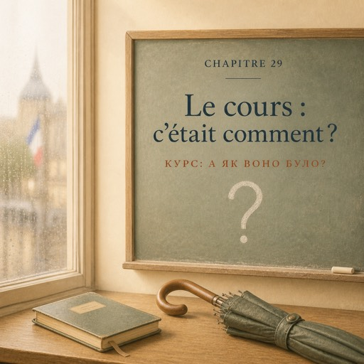

Le jeudi 4 décembre, dix-huit heures trente — четвер, 4 грудня, о пів на сьому вечора
Il pleut depuis midi. Dans la salle, ça sent le manteau mouillé.
Дощ іде від полудня. В аудиторії пахне мокрим пальтом.
La fenêtre est blanche de buée, et quelqu'un a écrit un mot dedans. Personne ne sait qui.
Вікно біле від запітніння, і хтось написав на ньому слово. Ніхто не знає хто.
Madame Forestier ne dit pas bonsoir. Elle prend la craie et trace une longue ligne, d'un bout du tableau à l'autre.
Мадам Форестьє не вітається. Вона бере крейду й проводить довгу лінію — від одного краю дошки до другого.
Puis trois points sur la ligne.
Потім три крапки на цій лінії.
— Voilà mon dimanche.
— Ось моя неділя.
Personne ne comprend. Elle continue.
Ніхто не розуміє. Вона веде далі.
— Dimanche, il pleuvait. J'étais chez moi. Je lisais.
— У неділю йшов дощ. Я була вдома. Я читала.
Elle montre la ligne.
Вона показує на лінію.
— À quatre heures, le téléphone a sonné. J'ai répondu. Je suis sortie.
— О четвертій задзвонив телефон. Я відповіла. Я вийшла з дому.
Elle montre les trois points.
Вона показує на три крапки.
— La ligne, c'est le décor. Ça dure. Ça n'a pas d'heure.
— Лінія — це тло. Воно триває. У нього немає години.
— Les points, c'est ce qui arrive. Ça a une heure.
— Крапки — це те, що стається. У нього година є.
Elle écrit deux mots sous le dessin : IMPARFAIT sous la ligne, PASSÉ COMPOSÉ sous les points.
Вона підписує малюнок двома словами: IMPARFAIT під лінією, PASSÉ COMPOSÉ під крапками.
Rafael parle avant tout le monde.
Рафаель озивається раніше за всіх.
— « Il pleuvait », c'est la ligne. « Il a sonné », c'est un point.
— «Il pleuvait» — це лінія. «Il a sonné» — це крапка.
— Exact. Pourquoi ?
— Точно. Чому?
— Je ne sais pas. Ça s'entend.
— Не знаю. Це чути.
— Gardez ça. C'est votre meilleur outil.
— Тримайтеся цього. Це ваш найкращий інструмент.
Nour lève la main.
Нур піднімає руку.
— Et si je dis « il a plu dimanche » ?
— А якщо я скажу «il a plu dimanche»?
— Alors la pluie devient un point. Elle a commencé, elle a fini : c'est un événement de votre journée.
— Тоді дощ стає крапкою. Він почався, він закінчився — це подія вашого дня.
— La même pluie, deux places différentes.
— Той самий дощ, два різні місця.
Madame Forestier écrit deux questions au tableau, en grand.
Мадам Форестьє великими літерами пише на дошці два питання.
QU'EST-CE QUE TU AS FAIT ?
QU'EST-CE QUE TU AS FAIT ? — Що ти робив (зробив)?
C'ÉTAIT COMMENT ?
C'ÉTAIT COMMENT ? — А як воно було?
— La première demande les points. La deuxième demande la ligne. Par deux. Cinq minutes.
— Перше питає крапки. Друге питає лінію. По двоє. П'ять хвилин.
Natalia est avec Rafael. Il parle vite, il parle mal, et il ne s'arrête jamais.
Наталя в парі з Рафаелем. Він говорить швидко, говорить погано і не зупиняється ніколи.
— Alors ! Qu'est-ce que tu as fait hier ?
— Ну! Що ти вчора робила?
— Hier, un client est entré. Il a posé un bouquet mort sur le comptoir. Il a crié.
— Учора зайшов клієнт. Поклав на прилавок мертвий букет. Кричав.
— J'ai posé deux questions. Il est parti avec des œillets.
— Я поставила два питання. Він пішов із гвоздиками.
— Ouah. Et c'était comment ?
— Ого. А як воно було?
Natalia s'arrête.
Наталя зупиняється.
Les points, elle les a tous. Le reste ne vient pas.
Крапки в неї всі є. Решта не йде.
— C'était... difficile.
— Було... важко.
— Non, non. C'était comment ? Lui. Le client.
— Ні, ні. Яким воно було? Він. Клієнт.
Elle cherche. Le mot n'est pas difficile. C'est la forme qui manque.
Вона шукає. Слово неважке. Бракує форми.
Puis la phrase arrive toute seule, comme si elle était déjà écrite quelque part.
А тоді фраза приходить сама, ніби вона вже десь була написана.
— Il criait, mais il n'était pas méchant. Il était seul.
— Він кричав, але він не був злий. Він був самотній.
Rafael, pour une fois, se tait.
Рафаель уперше мовчить.
— Ça, dit madame Forestier derrière elle, c'est de l'imparfait.
— Оце, — каже мадам Форестьє в неї за спиною, — і є imparfait.
Natalia ne savait pas qu'elle était là.
Наталя не знала, що вона стоїть поруч.
À vingt heures trente, la ligne et les points disparaissent sous l'éponge.
О пів на дев'яту лінія й крапки зникають під губкою.
— Les points, tout le monde sait les raconter. La ligne, presque personne.
— Крапки вміють розповідати всі. Лінію — майже ніхто.
— Posez la deuxième question : c'est celle qui fait parler les gens.
— Ставте друге питання: саме воно змушує людей говорити.
Dans le métro, ligne 9, Natalia pense à monsieur Lévy.
У метро, на дев'ятій лінії, Наталя думає про мсьє Леві.
Le quartier était pauvre. Il travaillait la porte ouverte. Il y avait un café en face. Il avait les cheveux longs.
Квартал був бідний. Він працював із відчиненими дверима. Навпроти було кафе. У нього було довге волосся.
Vingt minutes de ligne, la semaine dernière, et presque pas de points.
Двадцять хвилин суцільної лінії минулого тижня — і майже жодної крапки.
Elle a tout compris et elle n'a rien su nommer.
Вона тоді все зрозуміла — і нічого не змогла назвати.
Elle sort son carnet.
Вона дістає блокнот.
Rien à écrire, ce soir. Elle trace une longue ligne et, dessus, trois points.
Писати сьогодні нічого. Вона проводить довгу лінію, а на ній — три крапки.
Le reste du trajet, elle raconte sa semaine dans sa tête. Une ligne, des points. Une ligne, des points.
Решту дороги вона переказує собі свій тиждень. Лінія, крапки. Лінія, крапки.